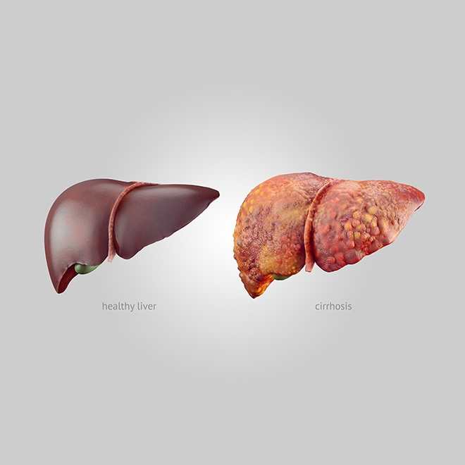

Cirrhosis

SYMPTOMS:
Cirrhosis often has no signs or symptoms until liver damage is extensive. When signs and symptoms do occur, they may include:
- Fatigue
-
Easily bleeding or bruising
-
Loss of appetite
-
Nausea
-
Swelling in your legs, feet or ankles (edema)
-
Weight loss
-
Itchy skin
-
Yellow discoloration in the skin and eyes (jaundice)
-
Fluid accumulation in your abdomen (ascites)
-
Spiderlike blood vessels on your skin
-
Redness in the palms of the hands
-
For women, absent or loss of periods not related to menopause
-
For men, loss of sex drive, breast enlargement (gynecomastia) or testicular atrophy
-
Confusion, drowsiness and slurred speech (hepatic encephalopathy)
CAUSES
A wide range of diseases and conditions can damage the liver and lead to cirrhosis.
Some of the causes include:
- Chronic alcohol abuse
-
Chronic viral hepatitis (hepatitis B, C and D)
-
Fat accumulating in the liver (nonalcoholic fatty liver disease)
-
Iron buildup in the body (hemochromatosis)
-
Cystic fibrosis
-
Copper accumulated in the liver (Wilson's disease)
-
Poorly formed bile ducts (biliary atresia)
-
Alpha-1 antitrypsin deficiency
-
Inherited disorders of sugar metabolism (galactosemia or glycogen storage disease)
-
Genetic digestive disorder (Alagille syndrome)
-
Liver disease caused by your body's immune system (autoimmune hepatitis)
-
Destruction of the bile ducts (primary biliary cirrhosis)
-
Hardening and scarring of the bile ducts (primary sclerosing cholangitis
-
Infection, such as syphilis or brucellosis
-
Medications, including methotrexate or isoniazid
DIAGNOSIS:
- Laboratory tests. Your doctor may order blood tests to check for signs of liver malfunction, such as excess bilirubin, as well as for certain enzymes that may indicate liver damage. To assess kidney function, your blood is checked for creatinine. You'll be screened for the hepatitis viruses. Your international normalized ratio (INR) is also checked for your blood's ability to clot.
-
Based on the blood test results, your doctor may be able to diagnose the underlying cause of cirrhosis. He or she can also use blood tests to help identify how serious your cirrhosis is.
-
Imaging tests. Magnetic resonance elastography (MRE) may be recommended. This noninvasive advanced imaging test detects hardening or stiffening of the liver. Other imaging tests, such as MRI, CT and ultrasound, may also be done.
-
Biopsy. A tissue sample (biopsy) is not necessarily needed for diagnosis. However, your doctor may use it to identify the severity, extent and cause of liver damage.
TREATMENT
- Treatment for alcohol dependency. People with cirrhosis caused by excessive alcohol use should try to stop drinking. If stopping alcohol use is difficult, your doctor may recommend a treatment program for alcohol addiction. If you have cirrhosis, it is critical to stop drinking since any amount of alcohol is toxic to the liver.
-
Weight loss. People with cirrhosis caused by nonalcoholic fatty liver disease may become healthier if they lose weight and control their blood sugar levels.
-
Medications to control hepatitis. Medications may limit further damage to liver cells caused by hepatitis B or C through specific treatment of these viruses.
-
Medications to control other causes and symptoms of cirrhosis. Medications may slow the progression of certain types of liver cirrhosis. For example, for people with primary biliary cirrhosis that is diagnosed early, medication may significantly delay progression to cirrhosis.